I purchased this from
Robinson Motorcycle in 2004
when it was 3 years old with 20,000km on the odometer. It has been well
maintained and stored in a garage as long as I have owned it.
There is a lot to love about this bike. It is classified as a
sport-touring bike. It is a dream for touring and it also handles
surprisingly well at low speeds. Lots of power when you want it without
making you feel like you should go faster. The seat is adjustable to three
positions. It can comfortably tour with two people and lots of gear.
Optional equipment on this bike:
BMW Top case and backrest.
BMW Engine Guards.
BMW Navigator GPS. This is a Garmin StreetPilot III branded by BMW. It
includes custom mount and wiring for the RT. This is mounted between the
handle bars and wired in. It is slow compared to new GPS but the maps
were updated a few years ago. It can also be used in the car. It has
both a security screw if you want to leave it on the bike, or a thumb
screw if you want to take it on and off.
LED Tail light and brake light by Brake! Modulates when you first apply
the brakes so you get noticed. Much brighter than the original
tail/brake lights.
Signal Minder turn signal canceller. So you don't forget to turn off
your turn signals.
BMW battery charger (by Battery Tender). Charges the battery and
maintains it. Leave it on all winter or when you are not riding for a
while. It will not over charge your battery.
High Quality Motorcycle Cover (but not BMW brand, so it does not say BMW
in huge letters).
Chicane tank bag. Easily snaps on and off. Has a rain cover built in.
And backpack straps so you can use it off the bike.
Gerbing heated jacket and gloves with controller. The jacket is
Large-Tall and the gloves are XL. They have to fit you pretty well or
they don't do the job.
Click on the pictures below to enlarge.
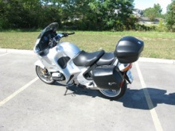2001 BMW R1150RT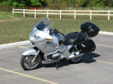2001 BMW R1150RT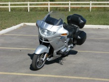2001 BMW R1150RT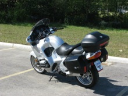2001 BMW R1150RT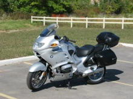2001 BMW R1150RT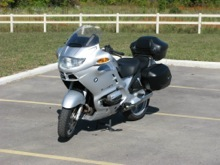2001 BMW R1150RT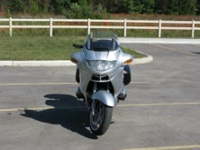2001 BMW R1150RT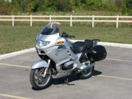Without the Top Case.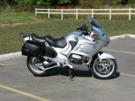Without the Top Case.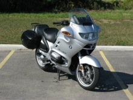Without the Top Case.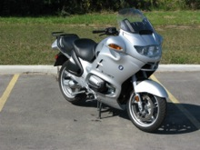Without the Side Case (standard equipment).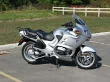Without the Side Case.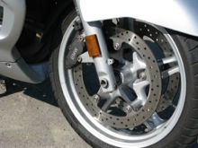Front Wheel.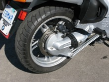Rear Paralever Suspension.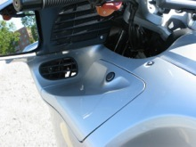Glove Box in Side Fairing.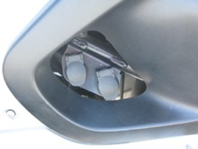Two Powerlet outlets for accessories.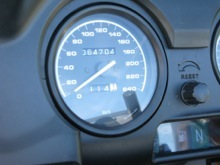Less than 65,000 km!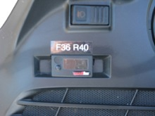SmarTire Tire Pressure Monitoring System.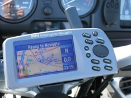BMW Navigator by Garmin. An OEM option.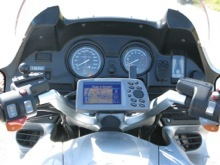View of Instruments from Riders Position.
{kind=link}
{kind=link}
{kind=link}
{kind=link}
{kind=link}
{kind=link}
{kind=link}
{kind=link}
{kind=link}
{kind=link}
{kind=link}
{kind=link}
{kind=link}
{kind=link}
{kind=link}
{kind=link}
{kind=link}
{kind=link}
{kind=link}
{kind=link}
{kind=link}